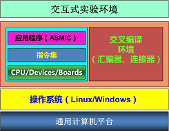
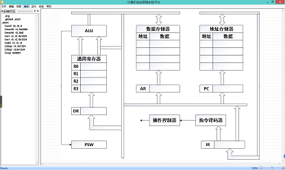
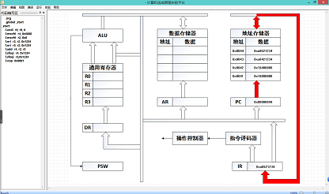

计算机组成原理仿真实验教学资源
计算机组成原理是计算机以及软件类专业一门主要的专业基础课程，该课程的学习必须通过实验进一步深入理解课堂教学内容，切实掌握计算机各功能模块的工作原理，相互联系和来龙去脉。完整地建立起计算机的整机概念。通过各单元实验分析计算机各基本组成模块的实际构造方法，深入理解各模块的工作原理，不仅要深入体会各模块的工作原理，同时要特别重视对“时序”概念的理解。要切实体会时序的实现方法以及对模块功能的重要作用。
4.1计算机组成原理虚拟仿真平台
本课程的虚拟仿真实验环境是我们自主研发的实验平台，是一种在通用计算机运行的纯软件仿真环境。该系统的模块架构图如图33所示，软件的登录界面如图34所示。
 
图33: 实验平台的模块结构 图34: 实验平台的登录界面
该虚拟仿真教学平台，支持以下几大类实验: (1)运算器及设计实验 基本运算器实验 超前进位加法器设计实验 阵列乘法器设计实验 (2)存储系统及设计实验 静态随机存储器实验 Cache控制器设计实验 (3)控制器及设计实验 时序发生器设计实验 微程序控制器实验 (4)系统总线与总线接口实验 系统总线和具有基本输入输出功能的总线接口实验 具有中断控制功能的总线接口设计 具有DMA控制功能的总线接口设计 (5)模型计算机的设计实验 CPU与简单模型机设计实验 硬布线控制器模型机设计实验 复杂模型机设计实验 (6)输入、输出系统实验 具有中断处理功能的模型计算机设计实验 具有DMA处理功能的模型计算机设计实验 典型I/O接口8253扩展设计实验 (7)先进计算机结构的设计及研究实验 基于RISC处理器的模型计算机设计实验 基于重叠技术的模型计算机设计实验 基于流水技术的模型计算机设计实验 超标量流水模型计算机设计实验（须选配超标量实验扩展单元） 该平台提供的虚拟部件如表10所示。
图表10:组成原理虚拟器件
|
序号 |
类别 |
虚拟器件 |
|
1 |
CPU |
虚拟32/16/6 RISC CPU |
|
ALU 虚拟部件 |
||
|
多级流水线通路 |
||
|
Cache虚拟器件 |
||
|
乘法器（定点、浮点） |
||
|
加法器 |
||
|
2 |
寄存器类 |
寄存器堆栈 |
|
数据锁存器 |
||
|
地址锁存器 |
||
|
指令寄存器等 |
||
|
3 |
总线类 |
系统总线控制器 |
|
仲裁器 |
||
|
4 |
存储器类 |
堆栈 |
|
ROM |
||
|
RAM |
4.2 典型的实验项目:汇编程序设计实验
4.2.1 实验内容
该实验的实验目的是了解计算机指令的正确格式、指令编码、寻址方式和每一条指令的功能。在实验平台上输入如下指令段，查看执行过程: .org 0x100 .global _start _start: l.andi r0,r0,0 l.movhi r4,0x8000 l.movhi r2,0x0 l.ori r2,r2,0x1234 l.ori r3,r3,0x1234 l.add r4,r2,r3 l.sfeqi r4,0x1234 l.sfeqi r2,0x1234 l.nop 0x0001 首先，进入软件，选择代码编写区，如图35所示，输入以上代码，如图36所示
图35: 软件平台代码编写区
然后点击菜单栏的编译按钮，把汇编码变成机器码。接着点击菜单栏的执行按钮，选择按单指令单周期的执行方式，然后观察实验结果如图37所示。

图36: 代码输入后的状态

图37: 代码执行
4.2.2 实验功能与效果
在实验的过程中，学生通过使用软件和观察输出，直观地了解了汇编代码执行过程。该实验项目支持《计算机组成原理》等课程，每年800人，来自软件学院的二年级本科生。